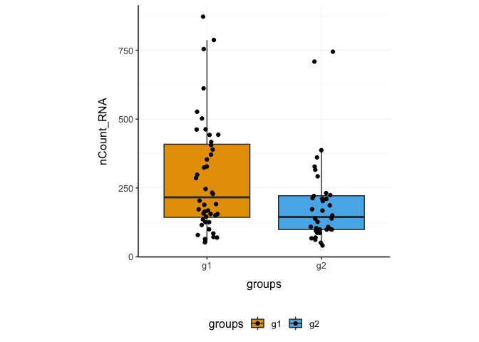
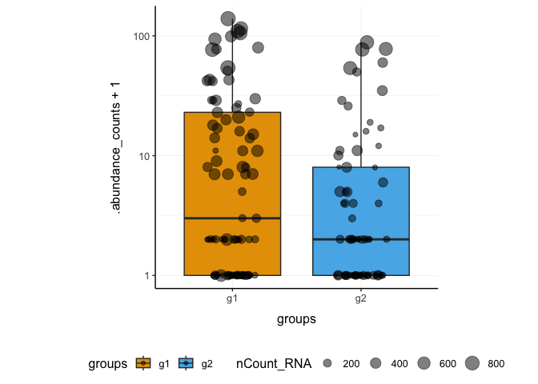
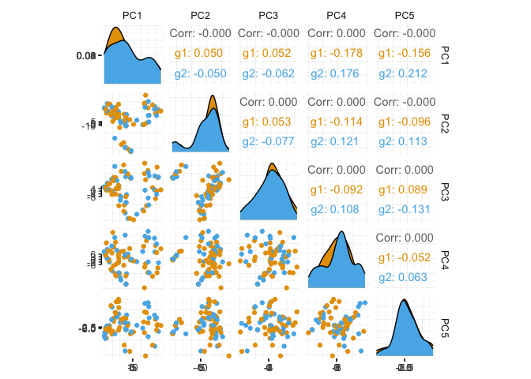
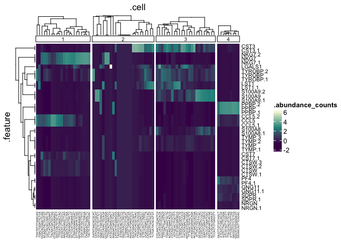
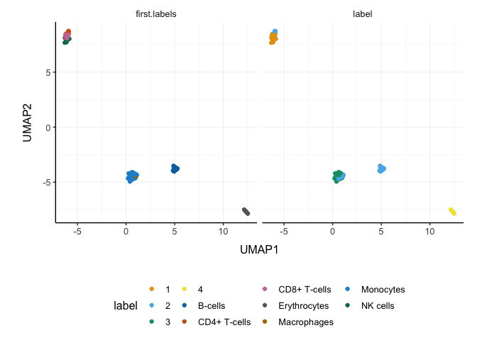
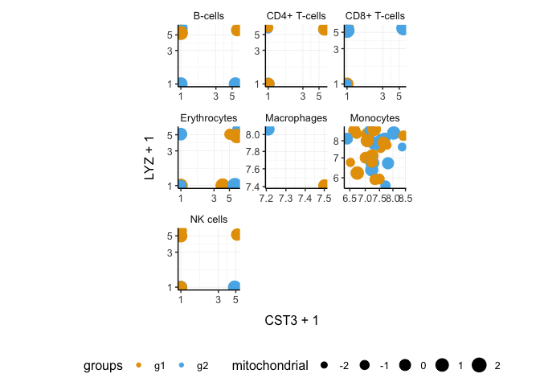
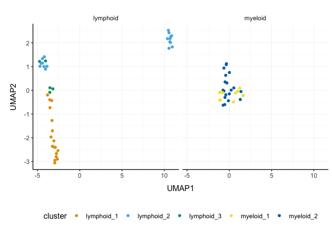

Brings SingleCellExperiment to the tidyverse!
Website: tidySingleCellExperiment
Please also have a look at
- tidySummarizedExperiment for tidy manipulation of SummarizedExperiment objects)
- tidyseurat for tidy manipulation of Seurat objects
- tidybulk for tidy bulk RNA-seq data analysis
- tidygate for adding custom gate information to your tibble
- tidyHeatmap for heatmaps produced with tidy principles
Introduction
tidySingleCellExperiment provides a bridge between Bioconductor single-cell packages [@amezquita2019orchestrating] and the tidyverse [@wickham2019welcome]. It enables viewing the Bioconductor SingleCellExperiment object as a tidyverse tibble, and provides SingleCellExperiment-compatible dplyr, tidyr, ggplot and plotly functions. This allows users to get the best of both Bioconductor and tidyverse worlds.
Functions/utilities available
| SingleCellExperiment-compatible Functions | Description |
|---|---|
all |
After all tidySingleCellExperiment is a SingleCellExperiment object, just better |
| tidyverse Packages | Description |
|---|---|
dplyr |
All dplyr tibble functions (e.g. select) |
tidyr |
All tidyr tibble functions (e.g. pivot_longer) |
ggplot2 |
ggplot (ggplot) |
plotly |
plot_ly (plot_ly) |
| Utilities | Description |
|---|---|
as_tibble |
Convert cell-wise information to a tbl_df
|
join_features |
Add feature-wise information, returns a tbl_df
|
aggregate_cells |
Aggregate cell gene-transcription abundance as pseudobulk tissue |
Installation
if (!requireNamespace("BiocManager", quietly=TRUE))
install.packages("BiocManager")
BiocManager::install("tidySingleCellExperiment")Load libraries used in this vignette.
Data representation of tidySingleCellExperiment
This is a SingleCellExperiment object but it is evaluated as a tibble. So it is compatible both with SingleCellExperiment and tidyverse.
data(pbmc_small, package="tidySingleCellExperiment")It looks like a tibble
pbmc_small## [90m# A SingleCellExperiment-tibble abstraction: 80 × 17[39m
## [90m# [90mFeatures=230 | Cells=80 | Assays=counts, logcounts[0m[39m
## .cell orig.ident nCount_RNA nFeature_RNA RNA_snn_res.0.8 letter.idents groups
## [3m[90m<chr>[39m[23m [3m[90m<fct>[39m[23m [3m[90m<dbl>[39m[23m [3m[90m<int>[39m[23m [3m[90m<fct>[39m[23m [3m[90m<fct>[39m[23m [3m[90m<chr>[39m[23m
## [90m 1[39m ATGC… SeuratPro… 70 47 0 A g2
## [90m 2[39m CATG… SeuratPro… 85 52 0 A g1
## [90m 3[39m GAAC… SeuratPro… 87 50 1 B g2
## [90m 4[39m TGAC… SeuratPro… 127 56 0 A g2
## [90m 5[39m AGTC… SeuratPro… 173 53 0 A g2
## [90m 6[39m TCTG… SeuratPro… 70 48 0 A g1
## [90m 7[39m TGGT… SeuratPro… 64 36 0 A g1
## [90m 8[39m GCAG… SeuratPro… 72 45 0 A g1
## [90m 9[39m GATA… SeuratPro… 52 36 0 A g1
## [90m10[39m AATG… SeuratPro… 100 41 0 A g1
## [90m# ℹ 70 more rows[39m
## [90m# ℹ 10 more variables: RNA_snn_res.1 <fct>, file <chr>, ident <fct>,[39m
## [90m# PC_1 <dbl>, PC_2 <dbl>, PC_3 <dbl>, PC_4 <dbl>, PC_5 <dbl>, tSNE_1 <dbl>,[39m
## [90m# tSNE_2 <dbl>[39mBut it is a SingleCellExperiment object after all
assay(pbmc_small, "counts")[1:5, 1:5]## 5 x 5 sparse Matrix of class "dgCMatrix"
## ATGCCAGAACGACT CATGGCCTGTGCAT GAACCTGATGAACC TGACTGGATTCTCA
## MS4A1 . . . .
## CD79B 1 . . .
## CD79A . . . .
## HLA-DRA . 1 . .
## TCL1A . . . .
## AGTCAGACTGCACA
## MS4A1 .
## CD79B .
## CD79A .
## HLA-DRA 1
## TCL1A .The SingleCellExperiment object’s tibble visualisation can be turned off, or back on at any time.
# Turn off the tibble visualisation
options("restore_SingleCellExperiment_show" = TRUE)
pbmc_small## class: SingleCellExperiment
## dim: 230 80
## metadata(0):
## assays(2): counts logcounts
## rownames(230): MS4A1 CD79B ... SPON2 S100B
## rowData names(5): vst.mean vst.variance vst.variance.expected
## vst.variance.standardized vst.variable
## colnames(80): ATGCCAGAACGACT CATGGCCTGTGCAT ... GGAACACTTCAGAC
## CTTGATTGATCTTC
## colData names(9): orig.ident nCount_RNA ... file ident
# Turn on the tibble visualisation
options("restore_SingleCellExperiment_show" = FALSE)Annotation polishing
We may have a column that contains the directory each run was taken from, such as the “file” column in pbmc_small.
pbmc_small$file[1:5]## [1] "../data/sample2/outs/filtered_feature_bc_matrix/"
## [2] "../data/sample1/outs/filtered_feature_bc_matrix/"
## [3] "../data/sample2/outs/filtered_feature_bc_matrix/"
## [4] "../data/sample2/outs/filtered_feature_bc_matrix/"
## [5] "../data/sample2/outs/filtered_feature_bc_matrix/"We may want to extract the run/sample name out of it into a separate column. Tidyverse extract can be used to convert a character column into multiple columns using regular expression groups.
# Create sample column
pbmc_small_polished <-
pbmc_small |>
extract(file, "sample", "../data/([a-z0-9]+)/outs.+", remove=FALSE)
# Reorder to have sample column up front
pbmc_small_polished |>
select(sample, everything())## [90m# A SingleCellExperiment-tibble abstraction: 80 × 18[39m
## [90m# [90mFeatures=230 | Cells=80 | Assays=counts, logcounts[0m[39m
## .cell sample orig.ident nCount_RNA nFeature_RNA RNA_snn_res.0.8 letter.idents
## [3m[90m<chr>[39m[23m [3m[90m<chr>[39m[23m [3m[90m<fct>[39m[23m [3m[90m<dbl>[39m[23m [3m[90m<int>[39m[23m [3m[90m<fct>[39m[23m [3m[90m<fct>[39m[23m
## [90m 1[39m ATGC… sampl… SeuratPro… 70 47 0 A
## [90m 2[39m CATG… sampl… SeuratPro… 85 52 0 A
## [90m 3[39m GAAC… sampl… SeuratPro… 87 50 1 B
## [90m 4[39m TGAC… sampl… SeuratPro… 127 56 0 A
## [90m 5[39m AGTC… sampl… SeuratPro… 173 53 0 A
## [90m 6[39m TCTG… sampl… SeuratPro… 70 48 0 A
## [90m 7[39m TGGT… sampl… SeuratPro… 64 36 0 A
## [90m 8[39m GCAG… sampl… SeuratPro… 72 45 0 A
## [90m 9[39m GATA… sampl… SeuratPro… 52 36 0 A
## [90m10[39m AATG… sampl… SeuratPro… 100 41 0 A
## [90m# ℹ 70 more rows[39m
## [90m# ℹ 11 more variables: groups <chr>, RNA_snn_res.1 <fct>, file <chr>,[39m
## [90m# ident <fct>, PC_1 <dbl>, PC_2 <dbl>, PC_3 <dbl>, PC_4 <dbl>, PC_5 <dbl>,[39m
## [90m# tSNE_1 <dbl>, tSNE_2 <dbl>[39mPreliminary plots
Set colours and theme for plots.
# Use colourblind-friendly colours
friendly_cols <- dittoSeq::dittoColors()
# Set theme
custom_theme <-
list(
scale_fill_manual(values=friendly_cols),
scale_color_manual(values=friendly_cols),
theme_bw() +
theme(
panel.border=element_blank(),
axis.line=element_line(),
panel.grid.major=element_line(size=0.2),
panel.grid.minor=element_line(size=0.1),
text=element_text(size=12),
legend.position="bottom",
aspect.ratio=1,
strip.background=element_blank(),
axis.title.x=element_text(margin=margin(t=10, r=10, b=10, l=10)),
axis.title.y=element_text(margin=margin(t=10, r=10, b=10, l=10))
)
)## Warning: [1m[22mThe `size` argument of `element_line()` is deprecated as of ggplot2 3.4.0.
## [36mℹ[39m Please use the `linewidth` argument instead.
## [90mThis warning is displayed once every 8 hours.[39m
## [90mCall `lifecycle::last_lifecycle_warnings()` to see where this warning was[39m
## [90mgenerated.[39mWe can treat pbmc_small_polished as a tibble for plotting.
Here we plot number of features per cell.
pbmc_small_polished |>
ggplot(aes(nFeature_RNA, fill=groups)) +
geom_histogram() +
custom_theme
Here we plot total features per cell.
pbmc_small_polished |>
ggplot(aes(groups, nCount_RNA, fill=groups)) +
geom_boxplot(outlier.shape=NA) +
geom_jitter(width=0.1) +
custom_theme
Here we plot abundance of two features for each group.
pbmc_small_polished |>
join_features(features=c("HLA-DRA", "LYZ")) |>
ggplot(aes(groups, .abundance_counts + 1, fill=groups)) +
geom_boxplot(outlier.shape=NA) +
geom_jitter(aes(size=nCount_RNA), alpha=0.5, width=0.2) +
scale_y_log10() +
custom_theme## tidySingleCellExperiment says: join_features produces duplicate cell names to accomadate the long data format. For this reason, a data frame is returned for independent data analysis. Assay feature abundance is appended as .abundance_counts and .abundance_logcounts.
Preprocess the dataset
We can also treat pbmc_small_polished as a SingleCellExperiment object and proceed with data processing with Bioconductor packages, such as scran [@lun2016pooling] and scater [@mccarthy2017scater].
# Identify variable genes with scran
variable_genes <-
pbmc_small_polished |>
modelGeneVar() |>
getTopHVGs(prop=0.1)
# Perform PCA with scater
pbmc_small_pca <-
pbmc_small_polished |>
runPCA(subset_row=variable_genes)## Warning in check_numbers(k = k, nu = nu, nv = nv, limit = min(dim(x)) - : more
## singular values/vectors requested than available
## Warning in (function (A, nv = 5, nu = nv, maxit = 1000, work = nv + 7, reorth =
## TRUE, : You're computing too large a percentage of total singular values, use a
## standard svd instead.
pbmc_small_pca## [90m# A SingleCellExperiment-tibble abstraction: 80 × 18[39m
## [90m# [90mFeatures=230 | Cells=80 | Assays=counts, logcounts[0m[39m
## .cell orig.ident nCount_RNA nFeature_RNA RNA_snn_res.0.8 letter.idents groups
## [3m[90m<chr>[39m[23m [3m[90m<fct>[39m[23m [3m[90m<dbl>[39m[23m [3m[90m<int>[39m[23m [3m[90m<fct>[39m[23m [3m[90m<fct>[39m[23m [3m[90m<chr>[39m[23m
## [90m 1[39m ATGC… SeuratPro… 70 47 0 A g2
## [90m 2[39m CATG… SeuratPro… 85 52 0 A g1
## [90m 3[39m GAAC… SeuratPro… 87 50 1 B g2
## [90m 4[39m TGAC… SeuratPro… 127 56 0 A g2
## [90m 5[39m AGTC… SeuratPro… 173 53 0 A g2
## [90m 6[39m TCTG… SeuratPro… 70 48 0 A g1
## [90m 7[39m TGGT… SeuratPro… 64 36 0 A g1
## [90m 8[39m GCAG… SeuratPro… 72 45 0 A g1
## [90m 9[39m GATA… SeuratPro… 52 36 0 A g1
## [90m10[39m AATG… SeuratPro… 100 41 0 A g1
## [90m# ℹ 70 more rows[39m
## [90m# ℹ 11 more variables: RNA_snn_res.1 <fct>, file <chr>, sample <chr>,[39m
## [90m# ident <fct>, PC1 <dbl>, PC2 <dbl>, PC3 <dbl>, PC4 <dbl>, PC5 <dbl>,[39m
## [90m# tSNE_1 <dbl>, tSNE_2 <dbl>[39mIf a tidyverse-compatible package is not included in the tidySingleCellExperiment collection, we can use as_tibble to permanently convert tidySingleCellExperiment into a tibble.
# Create pairs plot with GGally
pbmc_small_pca |>
as_tibble() |>
select(contains("PC"), everything()) |>
GGally::ggpairs(columns=1:5, ggplot2::aes(colour=groups)) +
custom_theme
Identify clusters
We can proceed with cluster identification with scran.
pbmc_small_cluster <- pbmc_small_pca
# Assign clusters to the 'colLabels' of the SingleCellExperiment object
colLabels(pbmc_small_cluster) <-
pbmc_small_pca |>
buildSNNGraph(use.dimred="PCA") |>
igraph::cluster_walktrap() %$%
membership |>
as.factor()## Warning in (function (to_check, X, clust_centers, clust_info, dtype, nn, :
## detected tied distances to neighbors, see ?'BiocNeighbors-ties'
# Reorder columns
pbmc_small_cluster |> select(label, everything())## [90m# A SingleCellExperiment-tibble abstraction: 80 × 19[39m
## [90m# [90mFeatures=230 | Cells=80 | Assays=counts, logcounts[0m[39m
## .cell label orig.ident nCount_RNA nFeature_RNA RNA_snn_res.0.8 letter.idents
## [3m[90m<chr>[39m[23m [3m[90m<fct>[39m[23m [3m[90m<fct>[39m[23m [3m[90m<dbl>[39m[23m [3m[90m<int>[39m[23m [3m[90m<fct>[39m[23m [3m[90m<fct>[39m[23m
## [90m 1[39m ATGCC… 2 SeuratPro… 70 47 0 A
## [90m 2[39m CATGG… 2 SeuratPro… 85 52 0 A
## [90m 3[39m GAACC… 2 SeuratPro… 87 50 1 B
## [90m 4[39m TGACT… 1 SeuratPro… 127 56 0 A
## [90m 5[39m AGTCA… 2 SeuratPro… 173 53 0 A
## [90m 6[39m TCTGA… 2 SeuratPro… 70 48 0 A
## [90m 7[39m TGGTA… 1 SeuratPro… 64 36 0 A
## [90m 8[39m GCAGC… 2 SeuratPro… 72 45 0 A
## [90m 9[39m GATAT… 2 SeuratPro… 52 36 0 A
## [90m10[39m AATGT… 2 SeuratPro… 100 41 0 A
## [90m# ℹ 70 more rows[39m
## [90m# ℹ 12 more variables: groups <chr>, RNA_snn_res.1 <fct>, file <chr>,[39m
## [90m# sample <chr>, ident <fct>, PC1 <dbl>, PC2 <dbl>, PC3 <dbl>, PC4 <dbl>,[39m
## [90m# PC5 <dbl>, tSNE_1 <dbl>, tSNE_2 <dbl>[39mAnd interrogate the output as if it was a regular tibble.
# Count number of cells for each cluster per group
pbmc_small_cluster |>
count(groups, label)## tidySingleCellExperiment says: A data frame is returned for independent data analysis.
## [90m# A tibble: 8 × 3[39m
## groups label n
## [3m[90m<chr>[39m[23m [3m[90m<fct>[39m[23m [3m[90m<int>[39m[23m
## [90m1[39m g1 1 12
## [90m2[39m g1 2 14
## [90m3[39m g1 3 14
## [90m4[39m g1 4 4
## [90m5[39m g2 1 10
## [90m6[39m g2 2 11
## [90m7[39m g2 3 10
## [90m8[39m g2 4 5We can identify and visualise cluster markers combining SingleCellExperiment, tidyverse functions and tidyHeatmap [@mangiola2020tidyheatmap]
# Identify top 10 markers per cluster
marker_genes <-
pbmc_small_cluster |>
findMarkers(groups=pbmc_small_cluster$label) |>
as.list() |>
map(~ .x |>
head(10) |>
rownames()) |>
unlist()
# Plot heatmap
pbmc_small_cluster |>
join_features(features=marker_genes) |>
group_by(label) |>
heatmap(.feature, .cell, .abundance_counts, .scale="column")## tidySingleCellExperiment says: join_features produces duplicate cell names to accomadate the long data format. For this reason, a data frame is returned for independent data analysis. Assay feature abundance is appended as .abundance_counts and .abundance_logcounts.
## tidyHeatmap says: (once per session) from release 1.7.0 the scaling is set to "none" by default. Please use scale = "row", "column" or "both" to apply scaling
## Warning: [1m[22mThe `.scale` argument of `heatmap()` is deprecated as of tidyHeatmap 1.7.0.
## [36mℹ[39m Please use scale (without dot prefix) instead: heatmap(scale = ...)
## [90mThis warning is displayed once every 8 hours.[39m
## [90mCall `lifecycle::last_lifecycle_warnings()` to see where this warning was[39m
## [90mgenerated.[39m
Reduce dimensions
We can calculate the first 3 UMAP dimensions using the SingleCellExperiment framework and scater.
pbmc_small_UMAP <-
pbmc_small_cluster |>
runUMAP(ncomponents=3)And we can plot the result in 3D using plotly.
pbmc_small_UMAP |>
plot_ly(
x=~`UMAP1`,
y=~`UMAP2`,
z=~`UMAP3`,
color=~label,
colors=friendly_cols[1:4]
)
Cell type prediction
We can infer cell type identities using SingleR [@aran2019reference] and manipulate the output using tidyverse.
# Get cell type reference data
blueprint <- celldex::BlueprintEncodeData()
# Infer cell identities
cell_type_df <-
assays(pbmc_small_UMAP)$logcounts |>
Matrix::Matrix(sparse = TRUE) |>
SingleR::SingleR(
ref = blueprint,
labels = blueprint$label.main,
method = "single"
) |>
as.data.frame() |>
as_tibble(rownames="cell") |>
select(cell, first.labels)
# Join UMAP and cell type info
data(cell_type_df)
pbmc_small_cell_type <-
pbmc_small_UMAP |>
left_join(cell_type_df, by="cell")## Warning in is_sample_feature_deprecated_used(x, .cols):
## tidySingleCellExperiment says: from version 1.3.1, the special columns
## including cell id (colnames(se)) has changed to ".cell". This dataset is
## returned with the old-style vocabulary (cell), however, we suggest to update
## your workflow to reflect the new vocabulary (.cell).
# Reorder columns
pbmc_small_cell_type |>
select(cell, first.labels, everything())## Warning in is_sample_feature_deprecated_used(.data, .cols):
## tidySingleCellExperiment says: from version 1.3.1, the special columns
## including cell id (colnames(se)) has changed to ".cell". This dataset is
## returned with the old-style vocabulary (cell), however, we suggest to update
## your workflow to reflect the new vocabulary (.cell).
## [90m# A SingleCellExperiment-tibble abstraction: 80 × 23[39m
## [90m# [90mFeatures=230 | Cells=80 | Assays=counts, logcounts[0m[39m
## cell first.labels orig.ident nCount_RNA nFeature_RNA RNA_snn_res.0.8
## [3m[90m<chr>[39m[23m [3m[90m<chr>[39m[23m [3m[90m<fct>[39m[23m [3m[90m<dbl>[39m[23m [3m[90m<int>[39m[23m [3m[90m<fct>[39m[23m
## [90m 1[39m ATGCCAGAACGA… CD4+ T-cells SeuratPro… 70 47 0
## [90m 2[39m CATGGCCTGTGC… CD8+ T-cells SeuratPro… 85 52 0
## [90m 3[39m GAACCTGATGAA… CD8+ T-cells SeuratPro… 87 50 1
## [90m 4[39m TGACTGGATTCT… CD4+ T-cells SeuratPro… 127 56 0
## [90m 5[39m AGTCAGACTGCA… CD4+ T-cells SeuratPro… 173 53 0
## [90m 6[39m TCTGATACACGT… CD4+ T-cells SeuratPro… 70 48 0
## [90m 7[39m TGGTATCTAAAC… CD4+ T-cells SeuratPro… 64 36 0
## [90m 8[39m GCAGCTCTGTTT… CD4+ T-cells SeuratPro… 72 45 0
## [90m 9[39m GATATAACACGC… CD4+ T-cells SeuratPro… 52 36 0
## [90m10[39m AATGTTGACAGT… CD4+ T-cells SeuratPro… 100 41 0
## [90m# ℹ 70 more rows[39m
## [90m# ℹ 17 more variables: letter.idents <fct>, groups <chr>, RNA_snn_res.1 <fct>,[39m
## [90m# file <chr>, sample <chr>, ident <fct>, label <fct>, PC1 <dbl>, PC2 <dbl>,[39m
## [90m# PC3 <dbl>, PC4 <dbl>, PC5 <dbl>, tSNE_1 <dbl>, tSNE_2 <dbl>, UMAP1 <dbl>,[39m
## [90m# UMAP2 <dbl>, UMAP3 <dbl>[39mWe can easily summarise the results. For example, we can see how cell type classification overlaps with cluster classification.
# Count number of cells for each cell type per cluster
pbmc_small_cell_type |>
count(label, first.labels)## tidySingleCellExperiment says: A data frame is returned for independent data analysis.
## [90m# A tibble: 11 × 3[39m
## label first.labels n
## [3m[90m<fct>[39m[23m [3m[90m<chr>[39m[23m [3m[90m<int>[39m[23m
## [90m 1[39m 1 CD4+ T-cells 2
## [90m 2[39m 1 CD8+ T-cells 8
## [90m 3[39m 1 NK cells 12
## [90m 4[39m 2 B-cells 10
## [90m 5[39m 2 CD4+ T-cells 6
## [90m 6[39m 2 CD8+ T-cells 2
## [90m 7[39m 2 Macrophages 1
## [90m 8[39m 2 Monocytes 6
## [90m 9[39m 3 Macrophages 1
## [90m10[39m 3 Monocytes 23
## [90m11[39m 4 Erythrocytes 9We can easily reshape the data for building information-rich faceted plots.
pbmc_small_cell_type |>
# Reshape and add classifier column
pivot_longer(
cols=c(label, first.labels),
names_to="classifier", values_to="label"
) |>
# UMAP plots for cell type and cluster
ggplot(aes(UMAP1, UMAP2, color=label)) +
geom_point() +
facet_wrap(~classifier) +
custom_theme
We can easily plot gene correlation per cell category, adding multi-layer annotations.
pbmc_small_cell_type |>
# Add some mitochondrial abundance values
mutate(mitochondrial=rnorm(dplyr::n())) |>
# Plot correlation
join_features(features=c("CST3", "LYZ"), shape="wide") |>
ggplot(aes(CST3 + 1, LYZ + 1, color=groups, size=mitochondrial)) +
geom_point() +
facet_wrap(~first.labels, scales="free") +
scale_x_log10() +
scale_y_log10() +
custom_theme## Warning in is_sample_feature_deprecated_used(x, .cols):
## tidySingleCellExperiment says: from version 1.3.1, the special columns
## including cell id (colnames(se)) has changed to ".cell". This dataset is
## returned with the old-style vocabulary (cell), however, we suggest to update
## your workflow to reflect the new vocabulary (.cell).
Nested analyses
A powerful tool we can use with tidySingleCellExperiment is tidyverse nest. We can easily perform independent analyses on subsets of the dataset. First we classify cell types into lymphoid and myeloid, and then nest based on the new classification.
pbmc_small_nested <-
pbmc_small_cell_type |>
filter(first.labels != "Erythrocytes") |>
mutate(cell_class=dplyr::if_else(`first.labels` %in% c("Macrophages", "Monocytes"), "myeloid", "lymphoid")) |>
nest(data=-cell_class)## Warning: [1m[22mThere were 2 warnings in `mutate()`.
## The first warning was:
## [1m[22m[36mℹ[39m In argument: `data = map(...)`.
## Caused by warning in `is_sample_feature_deprecated_used()`:
## [33m![39m tidySingleCellExperiment says: from version 1.3.1, the special columns including cell id (colnames(se)) has changed to ".cell". This dataset is returned with the old-style vocabulary (cell), however, we suggest to update your workflow to reflect the new vocabulary (.cell).
## [1m[22m[36mℹ[39m Run `dplyr::last_dplyr_warnings()` to see the 1 remaining warning.
pbmc_small_nested## [90m# A tibble: 2 × 2[39m
## cell_class data
## [3m[90m<chr>[39m[23m [3m[90m<list>[39m[23m
## [90m1[39m lymphoid [90m<SnglCllE[,40]>[39m
## [90m2[39m myeloid [90m<SnglCllE[,31]>[39mNow we can independently for the lymphoid and myeloid subsets (i) find variable features, (ii) reduce dimensions, and (iii) cluster using both tidyverse and SingleCellExperiment seamlessly.
pbmc_small_nested_reanalysed <-
pbmc_small_nested |>
mutate(data=map(
data, ~ {
.x <- runPCA(.x, subset_row=variable_genes)
variable_genes <-
.x |>
modelGeneVar() |>
getTopHVGs(prop=0.3)
colLabels(.x) <-
.x |>
buildSNNGraph(use.dimred="PCA") |>
igraph::cluster_walktrap() %$%
membership |>
as.factor()
.x |> runUMAP(ncomponents=3)
}
))
pbmc_small_nested_reanalysed## [90m# A tibble: 2 × 2[39m
## cell_class data
## [3m[90m<chr>[39m[23m [3m[90m<list>[39m[23m
## [90m1[39m lymphoid [90m<SnglCllE[,40]>[39m
## [90m2[39m myeloid [90m<SnglCllE[,31]>[39mWe can then unnest and plot the new classification.
pbmc_small_nested_reanalysed |>
# Convert to tibble otherwise SingleCellExperiment drops reduced dimensions when unifying data sets.
mutate(data=map(data, ~ .x |> as_tibble())) |>
unnest(data) |>
# Define unique clusters
unite("cluster", c(cell_class, label), remove=FALSE) |>
# Plotting
ggplot(aes(UMAP1, UMAP2, color=cluster)) +
geom_point() +
facet_wrap(~cell_class) +
custom_theme
We can perform a large number of functional analyses on data subsets. For example, we can identify intra-sample cell-cell interactions using SingleCellSignalR [@cabello2020singlecellsignalr], and then compare whether interactions are stronger or weaker across conditions. The code below demonstrates how this analysis could be performed. It won’t work with this small example dataset as we have just two samples (one for each condition). But some example output is shown below and you can imagine how you can use tidyverse on the output to perform t-tests and visualisation.
pbmc_small_nested_interactions <-
pbmc_small_nested_reanalysed |>
# Unnest based on cell category
unnest(data) |>
# Create unambiguous clusters
mutate(integrated_clusters=first.labels |> as.factor() |> as.integer()) |>
# Nest based on sample
nest(data=-sample) |>
mutate(interactions=map(data, ~ {
# Produce variables. Yuck!
cluster <- colData(.x)$integrated_clusters
data <- data.frame(assays(.x) |> as.list() |> extract2(1) |> as.matrix())
# Ligand/Receptor analysis using SingleCellSignalR
data |>
cell_signaling(genes=rownames(data), cluster=cluster) |>
inter_network(data=data, signal=_, genes=rownames(data), cluster=cluster) %$%
`individual-networks` |>
map_dfr(~ bind_rows(as_tibble(.x)))
}))
pbmc_small_nested_interactions |>
select(-data) |>
unnest(interactions)If the dataset was not so small, and interactions could be identified, you would see something like below.
data(pbmc_small_nested_interactions)
pbmc_small_nested_interactions## [90m# A tibble: 100 × 9[39m
## sample ligand receptor ligand.name receptor.name origin destination
## [3m[90m<chr>[39m[23m [3m[90m<chr>[39m[23m [3m[90m<chr>[39m[23m [3m[90m<chr>[39m[23m [3m[90m<chr>[39m[23m [3m[90m<chr>[39m[23m [3m[90m<chr>[39m[23m
## [90m 1[39m sample1 cluster 1.PTMA cluster… PTMA VIPR1 clust… cluster 2
## [90m 2[39m sample1 cluster 1.B2M cluster… B2M KLRD1 clust… cluster 2
## [90m 3[39m sample1 cluster 1.IL16 cluster… IL16 CD4 clust… cluster 2
## [90m 4[39m sample1 cluster 1.HLA-B cluster… HLA-B KLRD1 clust… cluster 2
## [90m 5[39m sample1 cluster 1.CALM1 cluster… CALM1 VIPR1 clust… cluster 2
## [90m 6[39m sample1 cluster 1.HLA-E cluster… HLA-E KLRD1 clust… cluster 2
## [90m 7[39m sample1 cluster 1.GNAS cluster… GNAS VIPR1 clust… cluster 2
## [90m 8[39m sample1 cluster 1.B2M cluster… B2M HFE clust… cluster 2
## [90m 9[39m sample1 cluster 1.PTMA cluster… PTMA VIPR1 clust… cluster 3
## [90m10[39m sample1 cluster 1.CALM1 cluster… CALM1 VIPR1 clust… cluster 3
## [90m# ℹ 90 more rows[39m
## [90m# ℹ 2 more variables: interaction.type <chr>, LRscore <dbl>[39mAggregating cells
Sometimes, it is necessary to aggregate the gene-transcript abundance from a group of cells into a single value. For example, when comparing groups of cells across different samples with fixed-effect models.
In tidySingleCellExperiment, cell aggregation can be achieved using the aggregate_cells function.
pbmc_small |>
aggregate_cells(groups, assays = "counts")